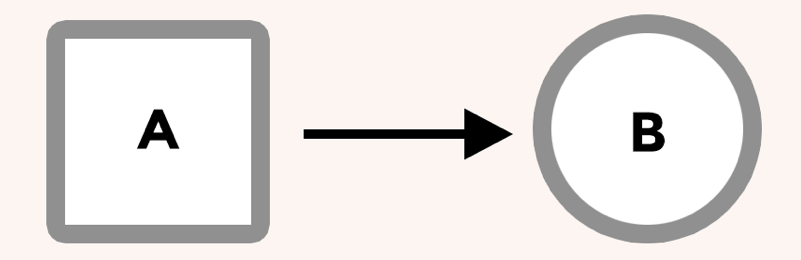
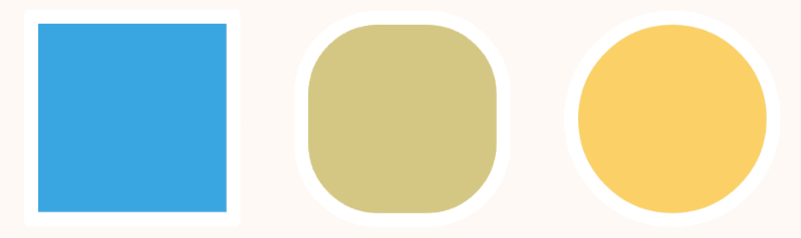
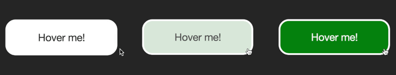

Transitions
Let’s look at the transition property.
Browsers used to be much more simple. It wasn’t so long ago that they couldn’t render images or handle more than a handful of fonts. Then CSS gave us power over how web pages look and feel.
Animation in browsers isn’t new. Flash, Canvas and other JavaScript options have given us ways to animate but more recently CSS has become a viable option.
Transitions
One way CSS lets us control animation in the browser with the transition property. In browser terms, a transition is an animation from one state to another.
When we use a transition on an element we tell the browser that we want it to interpolate, or automatically calculate, the change between states.
For example we can change an element’s style on hover, apply a transition, and the browser will create a smooth animation between the element’s starting style and it’s new style.
Transition properties
When we use a transition on an element, there are all sorts of properties that change how the transition works. We can make it slow or fast, delay it, and even control the rate of change using timing functions. We’ll delve into what these mean next week, but here’s a nice example of what happens when we combine several transitions:
Another example of combined transitions:
In Summary
A transition is the change from one state to another. For example, when hovering over an element, its style might change. Transitions allow the change to become a smooth animation.
Homework
I want you to browse around the internet looking for animations that happen when you hover over an element. Make sure it's something that you like as well as something that seems useful to the site. Disregard any animation that seems superfluous or out of place.
Once you've found a nice animation, use your browser's developer tools to look at how the animation was created.
Next, create a new codePen and try to recreate the effect. If you study how the original was created you should be able to reverse engineer the efect and rebuild it in codePen.
Be prepared to show your codePen and explain your code in the next class period.